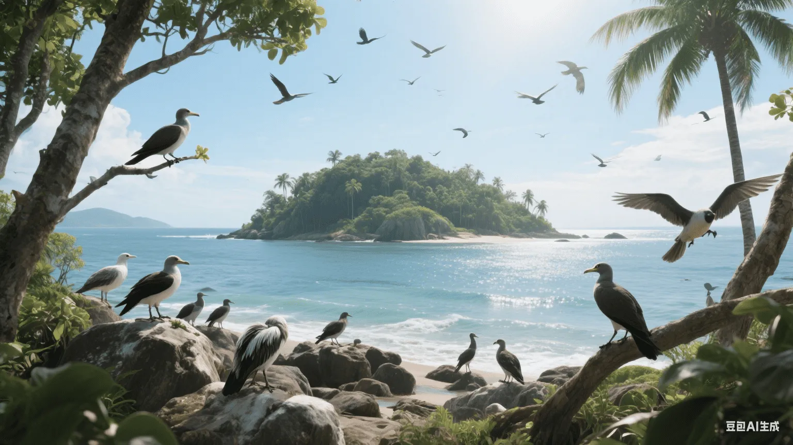

「島は自然の実験室であり、進化と生態学の原理が完璧に示される場所です。」
— 島嶼生物地理学者🏝️ 島嶼生物地理学理論
島嶼生物地理学は、島における種の多様性の形成と維持のメカニズムを研究し、鳥類の分布と進化を理解するための重要な枠組みを提供します。
📊 コアコンセプト
- 種数面積関係：大きな島はより多くの種を支える
- 距離効果：本土から遠い島は種が少ない
- 移入消滅平衡：種数は動的平衡に達する
- ターンオーバー率：種構成は絶えず変化する
⚖️ 平衡モデル
- 移入率は種数が増加するにつれて減少する
- 消滅率は種数が増加するにつれて増加する
- 2つの線の交点が平衡種数を表す
- 大きくて近い島はより多くの種を持つ
🦜 島嶼鳥類の特徴
島の環境は、鳥類に独特の形態的、生理的、行動的特徴を形成させます。
📏 形態的変化
- 島嶼巨大化：体サイズの増加
- 島嶼矮小化：体サイズの減少
- 飛行能力の低下
- くちばしの形状の特殊化
- 羽毛の色の変化
🎭 行動的適応
- 採餌行動の変化
- 営巣習慣の調整
- 社会行動の単純化
- 渡りの行動の喪失
- 人間への恐怖心の減少
🌿 生態学的役割の変化
- ニッチの拡大
- 食性の変化
- 多様な生息地の利用
- 競争関係の単純化
- 捕食関係の変化
🧬 島嶼での種分化
島は新種の形成に理想的な条件を提供します。
🚧 隔離メカニズム
- 地理的隔離：海が遺伝子流動を妨げる
- 生態的隔離：異なる生息地への適応
- 行動的隔離：繁殖行動の分岐
- 時間的隔離：繁殖時期の違い
🌟 適応放散
- ダーウィンフィンチ：くちばしの多様化
- ハワイミツスイ：ニッチの分化
- ガラパゴスマネシツグミ：島間の分化
- マダガスカルの鳥類：独自の進化
🏝️ 固有性
- 固有種の割合が高い
- 古代の固有種の保存
- 新しい固有種の形成
- 固有の属や科の形成
🌊 島嶼の種類と鳥類群集
異なる種類の島は、異なる鳥類群集を支えます。
🌊 海洋島
- 大陸と接続したことがない
- 種は少ないが固有性が高い
- 長距離分散種
- 顕著な適応放散
🏔️ 大陸島
- かつて大陸と接続していた
- 種が豊富
- 古代の遺存個体群
- 絶滅負債が存在
🌿 生息地島
- 不適切な生息地に囲まれている
- 山頂、湖、森林断片
- 実際の島と同様の効果
- 保護地域設計の参考
⚠️ 島嶼鳥類の脆弱性
島嶼鳥類は特別な生存の脅威に直面しています。
🧬 内的要因
- 小さな個体群サイズ
- 低い遺伝的多様性
- ニッチの特殊化
- 低い繁殖率
- 単純化された免疫系
🚨 外的脅威
- 生息地の破壊
- 外来種
- 病気の伝播
- 気候変動
- 人間の妨害
💀 絶滅パターン
- 島嶼鳥類の高い絶滅率
- 大きな種が先に絶滅する
- 特殊化した種は絶滅しやすい
- 小さな島の種はリスクが高い
🛡️ 島嶼鳥類の保全
島嶼鳥類の保全には特別な戦略と方法が必要です。
👾 外来種の管理
- ネコやネズミなどの哺乳類の駆除
- 外来植物の管理
- 検疫措置の強化
- 早期発見と迅速な対応
🌱 生息地の回復
- 在来植生の回復
- 営巣地の提供
- 食物資源の増加
- 水源の保護
🥚 飼育下繁殖
- 保険個体群の確立
- 遺伝的管理
- 再導入プログラム
- 技術の向上
🔄 移転保全
- 個体群の確立
- 生息地の評価
- 適応的管理
- 長期的なモニタリング
📚 古典的な研究事例
いくつかの古典的な島嶼鳥類の研究は、理論の発展に重要な貢献をしました。
🐦 ガラパゴス諸島
- ダーウィンフィンチの適応放散
- 進化論の重要な証拠
- ニッチ分化の研究
- 保全の成功事例
🌺 ハワイ諸島
- ハワイミツスイの適応放散
- 外来種の影響に関する研究
- 病気生態学
- 保全の課題
🥝 ニュージーランド
- 飛べない鳥の進化
- 哺乳類の侵入の影響
- 保全技術の革新
- 生態系の回復
🔬 現代の研究方法
現代の技術は島嶼生物地理学の研究に新しいツールを提供します。
🧬 分子ツール
- DNAバーコーディング
- 系統解析
- 集団遺伝学
- 遺伝子流動分析
🛰️ リモートセンシング技術
- 生息地マッピング
- 変化モニタリング
- 種分布モデリング
- 保全計画
💻 数理モデル
- 個体群存続可能性分析
- 気候変動予測
- 保全優先順位評価
- 管理意思決定支援
🔮 将来の研究方向
島嶼生物地理学における将来の研究の焦点：
- 気候変動が島嶼生態系に与える影響
- 海面上昇の脅威評価
- 保全における新技術の応用
- 生態系サービスの評価
- 持続可能な開発モデルの探求
- 国際協力メカニズムの改善